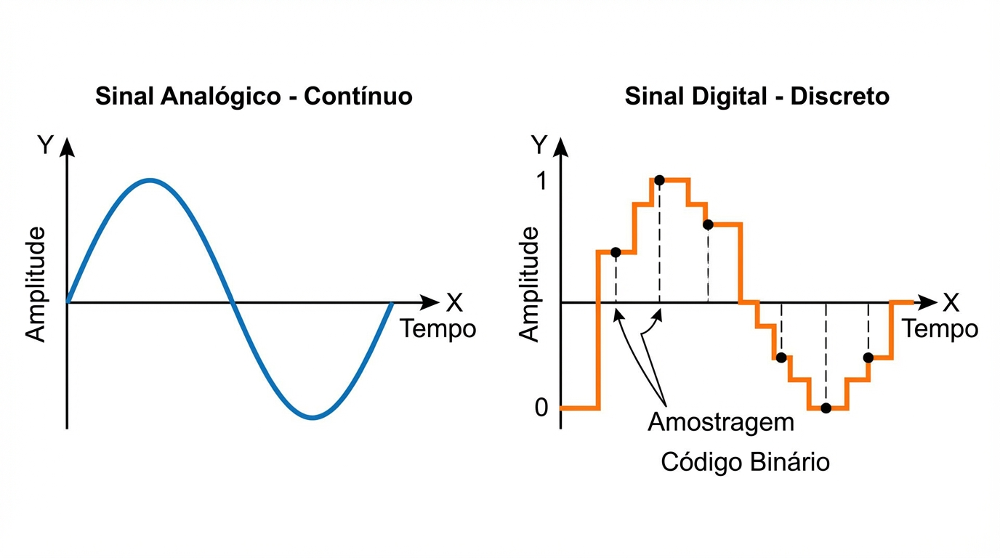

04
Sinais Analógicos vs. Digitais
A ponte entre o mundo físico (natureza) e o processamento computacional (ESP32).

Sinal Analógico
Contínuo no tempo. Possui infinitos níveis de amplitude. É a forma nativa da natureza
(som, luz).
⚠️ Mais suscetível a degradação por ruído.
Sinal Digital
Discreto (degraus). Valores definidos (0 e 1 ou níveis quantizados). Linguagem dos
computadores.
✅ Robusto e fácil de armazenar/processar.
Entrada Real
Amostragem